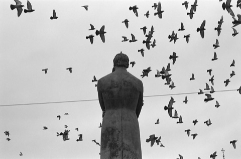

资讯
News

底片拍坏了怎么办？漏光、欠曝、划痕、发灰，一篇说清怎么救、怎么防
拍胶片最崩溃的不是贵，是拍完发现全废了。这篇把最常见的 5 种「翻车」现象拆开：怎么一眼判断是相机的问题、冲扫的问题，还是你的问题；哪些能救、哪些只能认；以及下次怎么防。免费内容，建议收藏或转发给刚入坑的朋友。

2026 胶片到底涨了没？我把每卷的涨跌拆开算了一遍
朋友圈都在传「胶片涨了 50%」，但我翻完公开报告发现：2026 年胶片均价其实只涨了约 2.5%，而且 Tri-X 还降了 30%。涨得最狠的是富士彩负（C200 一年涨超 60%），最便宜的口粮卷现在是国产的。这篇把每卷的涨跌拆开算一遍。
柯达
在产
Tri-X 400 胶卷
黑白界最经典的万能卷。宽容度极大、颗粒扎实、反差温暖，被称作‘黑泽明都爱用的稳卷’，街头/纪实/人像皆宜，也适合迫冲。
The most classic all-round black-and-white film. Huge latitude, solid grain, warm contrast - a dependable classic for street, documentary and portrait, and it pushes beautifully.
街头 · Street人像 · Portrait纪实 · Documentary暗光/夜景 · Low Light迫冲 · Push
柯达
在产
T-Max 100 (TMX) 胶卷
柯达 T 颗粒技术代表作，超细腻、高锐度、影调层次极佳，黑白中间调非常漂亮，适合风光/静物/大画幅。
Kodak's T-Grain flagship. Ultra-fine grain, high acutance, superb tonal gradation, gorgeous mid-tones - ideal for landscape, still life and large format.
风光 · Landscape静物/产品 · Still Life大画幅 · Large Format艺术创作 · Fine Art
柯达
在产
T-Max 400 (TMY) 胶卷
T 颗粒高速卷，颗粒细、反差大、可放心增感，夜拍/运动/现场都好用，追光党最爱。
Fast T-Grain film with fine grain and punchy contrast that takes pushing confidently. Great for night, action and events - a favorite among low-light shooters.
暗光/夜景 · Low Light运动/动态 · Action街头 · Street迫冲 · Push
柯达
在产
T-Max P3200 (TMZ) 胶卷
超高速卷，标称 ISO 3200、实为‘可迫冲’设计，可 EI 1600–25600，暗光/室内/体育，颗粒感强但宽容度惊人。
Ultra-high speed, nominally ISO 3200 but designed for pushing - use up to EI 25600. Grainy yet forgiving, for dim light, indoors and sports.
暗光/夜景 · Low Light室内 · Indoor体育 · Sports迫冲 · Push
柯达
在产
Double-X 5222 胶卷
经典电影黑白负片，灰阶充满‘老电影’质感、颗粒细腻、反差适中，街头人像都自带年代滤镜。
A classic motion-picture negative. Cinematic grey scale, fine-ish grain, balanced contrast - street and portraits take on an instant vintage-film look.
电影感 · Cinematic人像 · Portrait街头 · Street
富士
在产
Neopan 100 Acros II 胶卷
富士最细腻的卷，几乎零颗粒、影调层次极柔、黑极纯，风光/静物/大画幅的梦中情卷（2020 年代复产）。
Fujifilm's finest-grained film. Nearly grainless, silky tonal gradation, deep clean blacks - a dream for landscape, still life and large format.
风光 · Landscape静物/产品 · Still Life艺术创作 · Fine Art大画幅 · Large Format
富士
已停产
Neopan 100 (原版) 胶卷
已停产经典，柔和细腻、过渡平滑，Acros 的前身。
Discontinued classic. Gentle and fine, with smooth transitions - the forerunner of Acros.
风光 · Landscape人像 · Portrait
富士
已停产
Neopan 400 胶卷
已停产，暖调、颗粒适中，街头人像口粮卷。
Discontinued. Warm tone, medium grain - a workhorse for street and portrait.
街头 · Street人像 · Portrait
伊尔福
在产
HP5 Plus 胶卷
伊尔福旗舰全能卷，宽容度大、颗粒柔和、影调丰富，街头/纪实/人像万用，还能从容迫冲。
Ilford's flagship all-rounder. Wide latitude, soft grain, rich tonal range. Street, documentary and portrait, and it pushes with ease.
街头 · Street人像 · Portrait纪实 · Documentary迫冲 · Push
伊尔福
在产
FP4 Plus 胶卷
经典中速卷，细腻温和、反差适中、灰阶含蓄，风光和人像都透着一股优雅。
A classic mid-speed film. Fine, gentle, medium contrast with restrained greys - elegant for both landscape and portrait.
风光 · Landscape人像 · Portrait艺术创作 · Fine Art
伊尔福
在产
Delta 100 胶卷
伊尔福核壳技术，颗粒极细腻、影调纯净，专业得丝滑，风光/棚拍/翻拍皆宜。
Ilford's core-shell technology. Extremely fine grain, clean tones, silky professional gradation - for landscape, studio and copy work.
风光 · Landscape静物/产品 · Still Life棚拍 · Studio艺术创作 · Fine Art
伊尔福
在产
Delta 400 胶卷
高速细腻卷，暗部丰富、颗粒细、质感温和，夜拍/现场/活动好用。
Fast, fine-grained film. Rich shadows, fine grain, gentle texture - great for night, events and low light.
暗光/夜景 · Low Light街头 · Street活动 · Event
伊尔福
在产
Delta 3200 胶卷
超高速卷，EI 1600–3200 区间，暗光/室内/舞台，颗粒大但很有颗粒的氛围感。
Ultra-high speed, around EI 1600-3200. For dark rooms and stages; coarse, atmospheric grain.
暗光/夜景 · Low Light室内 · Indoor体育 · Sports迫冲 · Push
伊尔福
在产
Pan F Plus 胶卷
极细腻慢速卷，锐度高、影调硬朗有层次，适合顺光、风景、翻拍、慢拍的精致主题。
Extremely fine slow film. High acutance, crisp tonal scale - for controlled light, landscape, copy and deliberate fine work.
风光 · Landscape静物/产品 · Still Life翻拍 · Copy艺术创作 · Fine Art
伊尔福
在产
XP2 Super 胶卷
用 C41 彩色工艺冲洗的黑白卷，宽容度巨大、可大胆过/欠曝，扫描/冲印极方便，旅行口粮首选。
A black-and-white film processed in C41 color chemistry. Enormous latitude, forgiving over and underexposure, easy to scan or print - a travel favorite.
通用 · All-Around人像 · Portrait旅行 · Travel扫描友好 · Scan Friendly
伊尔福
在产
SFX 200 胶卷
对红外/长波红敏感的特殊卷，红色物体发亮、绿色发暗，自带超现实感，创意风光和情绪片好玩。
Extended red and infrared sensitivity. Red subjects glow, greens darken - a surreal touch for creative landscape and moody pictures.
红外 · Infrared创意 · Creative风光 · Landscape
伊尔福
在产
Ortho Plus 80 胶卷
正色性卷，黑白分明、高反差、影调硬朗，适合翻拍/线描/几何/建筑图形，线条感极强。
An orthochromatic film. Bold black-and-white separation and high contrast - great for copy, line-work, geometry and architecture, with crisp linear detail.
翻拍 · Copy黑白图形 · B&W Graphic图形/线条 · Graphic / Line建筑 · Architecture
伊尔福
在产
Kentmere 100 胶卷
伊尔福旗下亲民系列，性价比高、颗粒中性、反差稳定，日常练手/粗用/大量拍摄的好选择。
Ilford's budget-friendly line. High value, neutral grain, stable contrast - a sound choice for everyday practice and bulk shooting.
街头 · Street人像 · Portrait日常 · Daily
伊尔福
在产
Kentmere 400 胶卷
亲民高速卷，颗粒适中、反差稳定，练手/街头/纪实的好口粮，性价比高。
Affordable fast film. Medium grain, steady contrast - a value-packed workhorse for practice, street and documentary.
街头 · Street日常 · Daily纪实 · Documentary
Foma
在产
Fomapan 100 Classic 胶卷
捷克老牌，复古‘经典’调、颗粒略粗但很有味道，高性价比，怀旧派最爱。
A Czech classic. Retro classic character, a little more grain but lots of soul. Great value - a nostalgia favorite.
风光 · Landscape人像 · Portrait复古 · Retro
Foma
在产
Fomapan 200 Creative 胶卷
介于 100/400 之间，宽容度好、可塑性强，万用练手、氛围感好。
Sits between 100 and 400. Wide latitude, very adaptable - an all-round practice film with good mood.
街头 · Street人像 · Portrait日常 · Daily
Foma
在产
Fomapan 400 Action 胶卷
高速经典调、颗粒大、反差十足，适合运动/街头/阴天/需要动感的题材。
Fast classic character, chunky grain, full contrast - for motion, street, overcast days and anything that wants energy.
街头 · Street体育 · Sports纪实 · Documentary
Adox
在产
CHM 100 胶卷
采用 ORWO 工艺，细腻且反差优雅，德味古典，人像/风光/艺术创作皆宜。
ORWO-processed film. Fine grain and elegant contrast - classic German character for portrait, landscape and fine art.
人像 · Portrait风光 · Landscape艺术创作 · Fine Art
Adox
在产
CHM 400 胶卷
ORWO 高速卷，颗粒适中、影调深邃，街头/人像/纪实有德味。
ORWO high-speed film. Medium grain, deep tones - street, portrait and documentary with a German accent.
街头 · Street人像 · Portrait纪实 · Documentary
Adox
在产
Silvermax 100 胶卷
高银量、高锐度、极细腻，一档高反差，黑白影调霸道又干练，适合强调质感的人像/静物。
High silver content, high acutance, ultra-fine grain with strong one-stop contrast. Punchy, clean black-and-white for portrait and still life.
人像 · Portrait艺术创作 · Fine Art风光 · Landscape
Adox
在产
CMS 20 II 胶卷
超微粒卷，几乎零颗粒、极高锐度，需专用显影液，适合追求极致细腻/大画幅翻拍的艺术创作。
An ultra-fine, near-grainless film with extreme sharpness. Needs a dedicated developer - for meticulous fine art and large-format copy.
艺术创作 · Fine Art静物/产品 · Still Life实验室/翻拍 · Laboratory
Rollei
在产
RPX 100 胶卷
德系亲民卷，细腻干净、反差正常，日常/风光/人像都能安心用。
An approachable German film. Fine, clean, normal contrast - a dependable choice for daily, landscape and portrait.
风光 · Landscape人像 · Portrait日常 · Daily
Rollei
在产
RPX 400 胶卷
德系高速卷，颗粒适中、影调中性，街头/人像万用、好冲洗。
Fast German film. Medium grain, neutral tones - a versatile street and portrait film that processes easily.
街头 · Street人像 · Portrait日常 · Daily
Rollei
在产
Retro 80S 胶卷
仿经典片基、细腻、暗部透亮，适合风光/人像的复古干净质感。
Classic-style base, fine grain, bright shadows - a clean vintage feel for landscape and portrait.
风光 · Landscape人像 · Portrait复古 · Retro
Rollei
在产
Retro 400S 胶卷
高速复古调、颗粒明显、反差足，街头/阳光/动感场景氛围好。
Fast retro character, visible grain, full contrast - great atmosphere for street, sunlight and dynamic scenes.
街头 · Street复古 · Retro阳光 · Sunlight
ORWO
在产
UN54+ 胶卷
东德经典电影底片，灰色阶电影感、颗粒细腻，老胶片味十足，人像/街头有味道。
An East German classic motion-picture film. Cinematic greys, fine grain and a rich old-film feel for portrait and street.
电影感 · Cinematic人像 · Portrait街头 · Street
CineStill
在产
BWXX 胶卷
柯达 Double-X 的分装电影卷，电影灰阶+细腻颗粒，全画幅街头/人像都自带电影感。
A re-spooled Kodak Double-X. Cinematic greys and fine grain - full-frame street and portraits look like the movies.
电影感 · Cinematic人像 · Portrait街头 · Street
Japan Camera Hunter
在产
StreetPan 400 胶卷
对红色敏感的特殊街拍卷，红色发亮、反差大，街拍党很爱，自带强烈戏剧感。
A red-sensitive street special. Red goes bright, contrast runs high - strong drama for street shooters.
街头 · Street高反差 · High Contrast
Lomography
在产
Earl Grey 100 胶卷
复古黑白卷，影调柔和、颗粒细腻，适合慢拍人像/静物的温和质感。
A vintage black-and-white. Soft tones, fine grain - a gentle fit for slow portraits and still life.
人像 · Portrait复古 · Retro风光 · Landscape
Lomography
在产
Lady Grey 400 胶卷
经典中性调、颗粒适中，日常万用、性价比高，街头/人像/纪实都能用。
Classic neutral character, medium grain. Versatile and affordable for daily, street, portrait and documentary.
街头 · Street人像 · Portrait日常 · Daily
Lomography
在产
Potsdam Kino 100 胶卷
德国电影底片，灰阶丰富、反差优雅，老电影质感，人像/街头有味道。
A German motion-picture film. Rich greys, elegant contrast, old-cinema texture for portrait and street.
电影感 · Cinematic人像 · Portrait街头 · Street
Lomography
在产
Berlin Kino 400 胶卷
德国高速电影片，浓郁灰阶、颗粒有味道，街头戏剧感强，适合夜景/暗光。
Fast German motion-picture film. Dense greys, characterful grain, strong street drama - suited to night and low light.
电影感 · Cinematic街头 · Street暗光/夜景 · Low Light
Bergger
在产
Pancro 400 胶卷
法国 Bergger 经典高速黑白，宽动态、细腻、灰阶油润、带电影感，人像/街头/纪实皆有迷人层次。
Bergger's classic fast black-and-white. Wide dynamic range, fine grain, oily cinematic greys - beautiful layers for portrait, street and documentary.
电影感 · Cinematic人像 · Portrait街头 · Street
Harman
在产
Direct Positive 胶卷
反转正片卷，拍完直接出正像（幻灯片式）、无需底扫，自带独特反差，适合创意/直接观看的艺术表达。
A direct-positive film that yields a positive image straight away, no negative scanning. Unique contrast - ideal for creative, artful presentation.
创意 · Creative直接正像 · Direct Positive艺术 · Artistic
没有匹配的胶卷。换个关键词或放宽筛选试试。